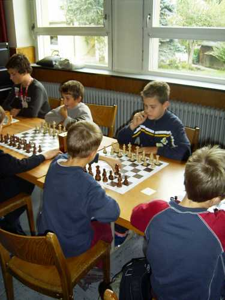
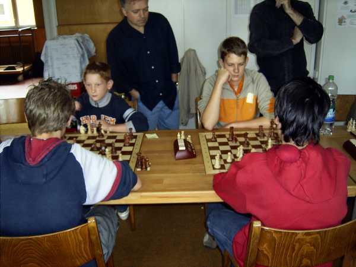
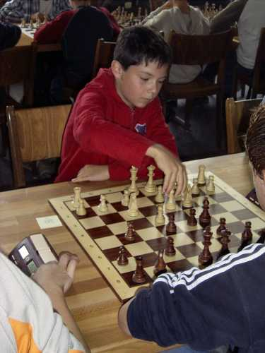
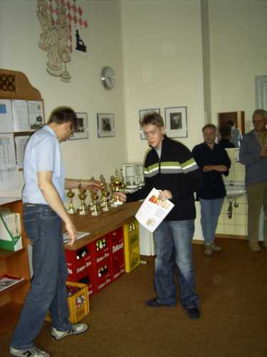
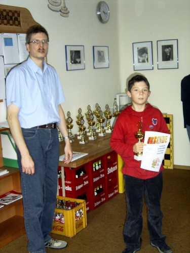
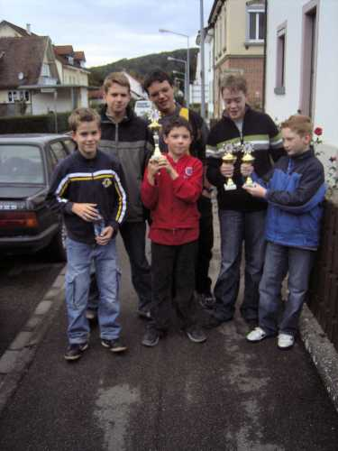

Mit 59 Teilnehmern war das Turnier sehr gut besetzt.

Johannes kämpft um jeden Punkt.

Lukas (links) und Rafael bei der "Arbeit".

Tobias (ganz rechts) und Eindrücke aus einem der beiden Turniersäle.

Jochen (vorne Mitte) gegen seinen Angstgegner Gregor Haag.

Daniel cool und entspannt ("was, der ist schon matt?").

Lukas ist stolz auf seinen 3. Platz in der U12.

Tobias wurde 2. in der U12, obwohl er schon etwas älter
war... (aber der Computer hat immer Recht

Strahlender Sieger in der U10 wurde Daniel.

Nach dem Turnier.